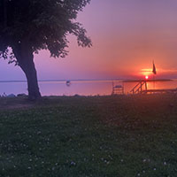

That Guy
better known as the one who is, are, and will, be that guy.
a warhammer minature he painted
his graduation
one of the many photos he's taken
Jace is a first year student in the Multimedia Production diploma program. He is focused on various things like digital design, videography, animation, and storytelling. In his spare time he enjoys video games, sports, and board games. His love for a good story or making his own keeps him enthralled in new and creative games, movies and shows etc. Even in his early days, design and creative storytelling have always been something Jace loves. He loves to create stories and settings for his friends
By using Adobe illustrator and Unreal engine he is able to help express his creativity for games such as Dungeons and Dragons as well as other rich stories with complex settings. He is able to help show his designs in these programs. Some of his most accomplished work consists of various news shows for Shaw TV,, as well as his numerous creative shows he created during middle and high school, from comedy shows and in-depth stories that were captivating to his classmates. People have always told him how his stories captivated and terrified them. His stories are always rich in detail while putting chills in other people's eyes. Jace has volunteered in various places, from working at Shaw TV as a camera operator in various shows, as well as a football coach for his own high school, which has only won one championship in the year he coached.
Outside of school Jace is very close with his family, always spending time with them whenever he gets the chance. Some of his hobbies include any form of sports that keep him active including slow pitch baseball, football, lacrosse, basketball and baseball. Jace likes to get to the gym to work out several times a week. His love of Dungeons and Dragons and Warhammer 40,000 have helped him develop detailed creative and rich stories that he loves to share. Right now Jace is currently working on several stories and settings that he intends to use as future games/books, and is excited to make these goals a reality.
His passion came from an early age being brought to his dad's work place at a radio and television. His passion for games, movies, creativity of videography and creativity came from there, or at least that is what he hoped. Jace has always taken inspiration from video games to help with his work from characters like Kratos from god of war, handsome jack from borderlands 2 and BJ Blascowits from the Wolfenstein series. All of these and more Jace takes inspiration from, helping make the stories he loves to create.